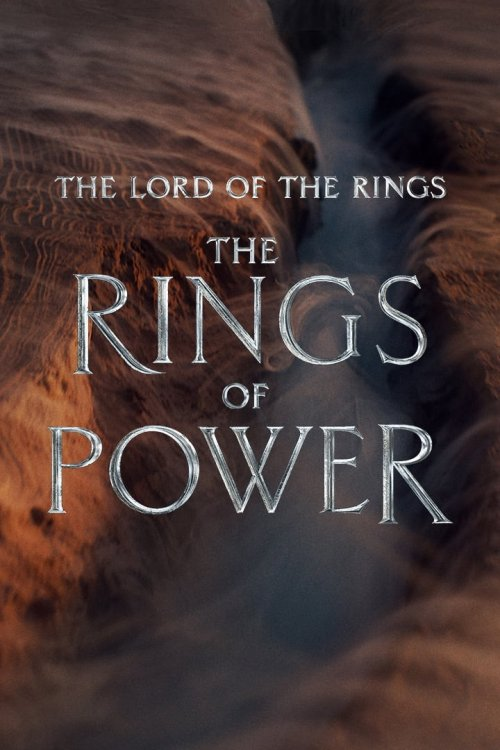

Fantastik Filmler
The Lord Of The Rings

Özet
Amazon Studios’un hazırlık aşamasındaki dizisi, Orta Dünya tarihinin destanlara konu olan İkinci Çağ’ındaki efsanevi kahramanları ilk kez ekrana getirecek. J.R.R. Tolkien’ın The Hobbit ve The Lord of the Rings’inin binlerce yıl öncesinde geçen bu epik drama, izleyicileri büyük güçlerin ortaya çıktığı, krallıkların yükseldiği ve çöktüğü, sürpriz kahramanların sınandığı, umudun pamuk ipliğine bağlı olduğu ve Tolkien’ın kaleminden çıkan en büyük kötü karakterin tüm dünyayı karanlığa gömmekle tehdit ettiği bir döneme götürecek. Orta Dünya’nın büyük ölçüde barış içinde olduğu bir dönemde başlayan dizi, hem tanıdık hem de yeni yüzlerden oluşan bir grup karakterin uzun süredir dönmesinden korkulan bir kötülüğün yeniden yükselmesiyle yüzleşmesini anlatacak. Sisli Dağlar’ın karanlık derinliklerinden, elflerin başkenti Lindon’ın görkemli ormanlarına, göz alıcı ada krallığı Númenor’dan haritanın en uç köşelerine, bu krallıklar ve karakterler, Orta Dünya’dan ayrıldıktan çok sonra da anlatılmaya devam edecek efsanelerini şekillendirecekler.